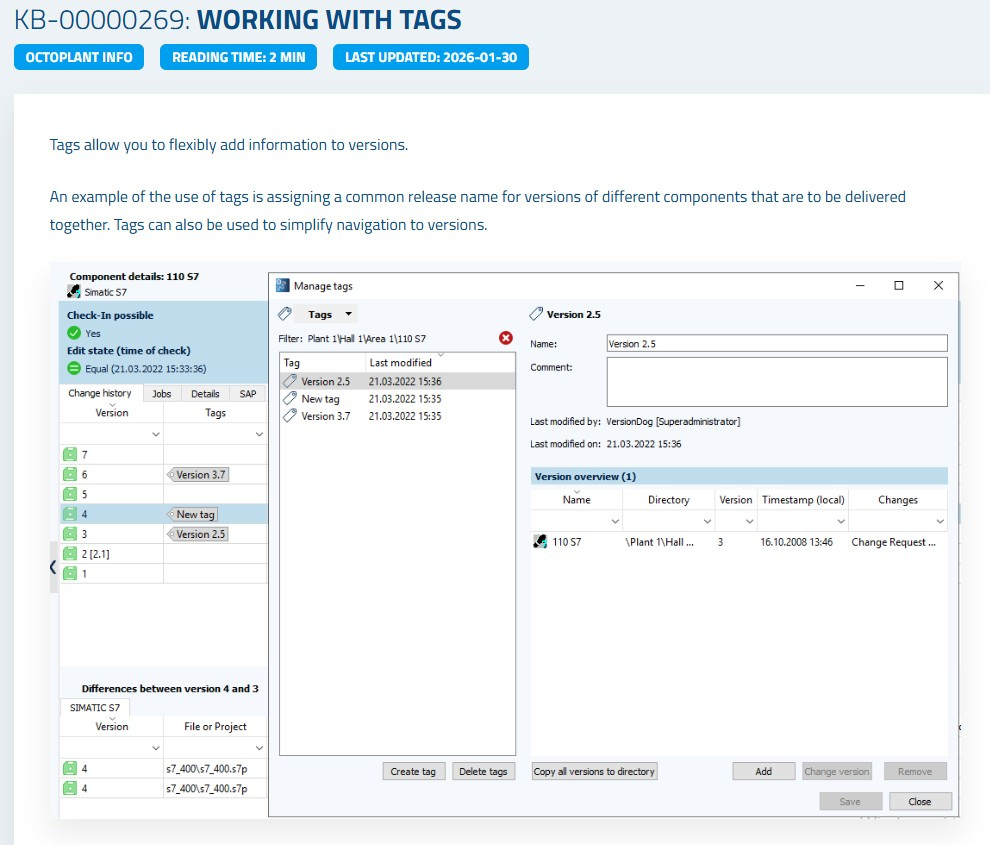
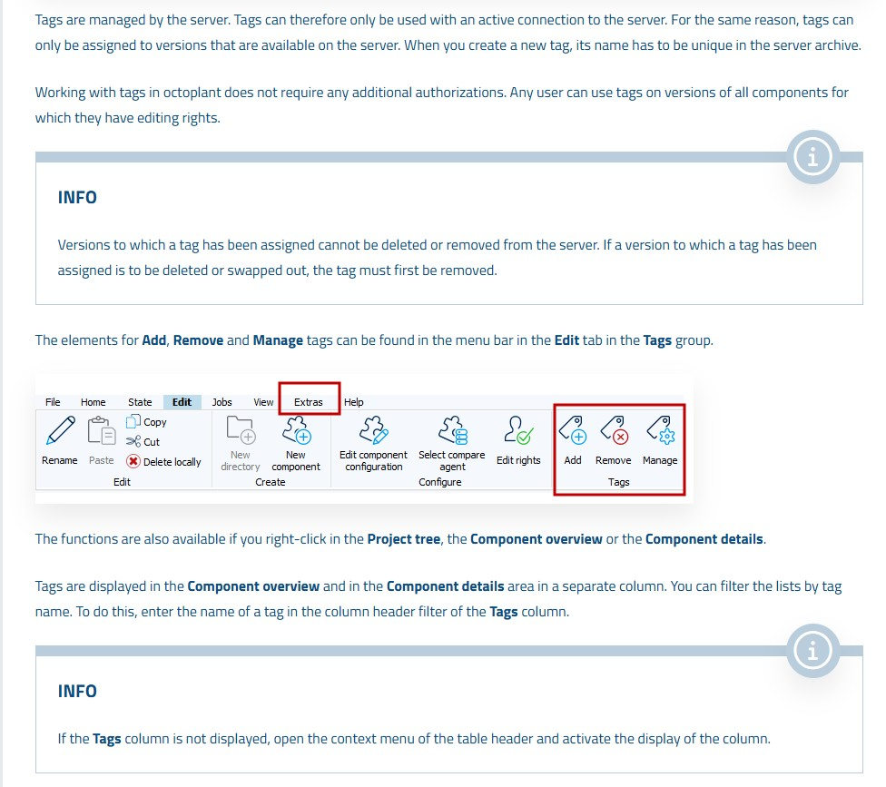

Chapter 14 of 15
Library Management
Library Management allows you to create centralized code libraries (e.g., standard function blocks) that are shared across multiple projects. Octoplant automatically detects inconsistencies between library versions and project copies, helping you maintain code quality and consistency.
1
Creating a Library Component
A library in Octoplant is a special component that serves as the master source for shared code blocks.
1
In the UserClient, create a new component with the appropriate type for your library (e.g., Simatic S7 Library).
2
Add the library's program blocks to the component and check it into the server.
2
Linking Projects to the Library
Projects that use the library must be explicitly linked to it in their component configuration.
1
Select a project component in the Project tree and open its component properties.
2
In the properties, assign the library component as a standard library for this project.
3
Repeat for all projects that should use this library.
3
Understanding Inconsistency Indicators
The Library Management view uses color-coded dots to indicate the relationship status between library blocks and project copies.
1
Open the Library Management view in the UserClient.
2
Interpret the color-coded indicators:
• Yellow dot: A block in the library has been updated — the project's copy is outdated
• Grey dot: A block has been deleted from the library — the project still has the old copy
• Red dot: A block in the project has been modified independently — it no longer matches the library version
• Yellow dot: A block in the library has been updated — the project's copy is outdated
• Grey dot: A block has been deleted from the library — the project still has the old copy
• Red dot: A block in the project has been modified independently — it no longer matches the library version
Maintaining ConsistencyRegularly check the Library Management view to identify and resolve inconsistencies. This ensures all projects use the latest, approved versions of shared code blocks.
3
For each inconsistency, decide whether to update the project to match the library or to accept the project's local modification.
Figure 14.1 – Library Management showing linked projects and inconsistency indicators

Figure 14.2 – Color-coded inconsistency dots: yellow (updated), grey (deleted), red (project-modified)

📋
Summary
| Action | Where / How | Result |
|---|---|---|
| Create Library | New component → Library type → Check-In | Central library available on server |
| Link Projects | Component properties → Assign standard library | Projects linked to library |
| Yellow Dot | Library block updated | Project copy is outdated |
| Grey Dot | Library block deleted | Project has orphaned block |
| Red Dot | Project block modified independently | Divergence from library standard |